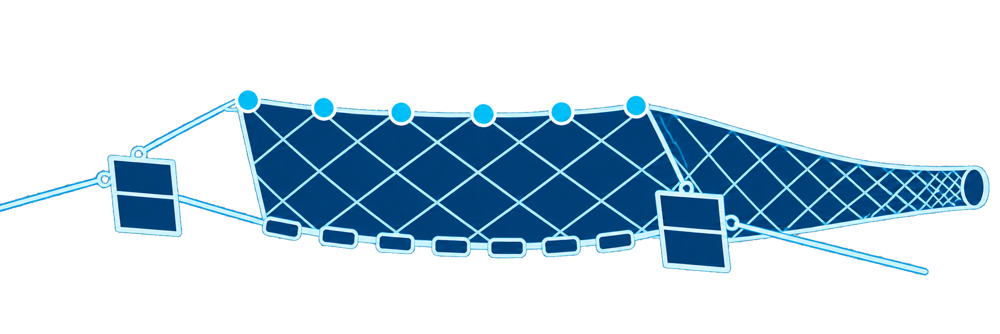

漁船


底拖網拖行時，會刮動埋在海床裡的海纜
26 條通訊海纜，是臺灣對內、對外的重要通訊管道，承載了 99% 的網路流量。當海纜從看不見的網路基礎設施，變成國防安全與社會焦慮的一部分。
我們從馬祖斷纜與臺灣面臨的灰色地帶風險出發，拆解手機服務可能出現的斷點，也走進五個人的離線準備：當熟悉的連線不再可靠，我們能否繼續取得資訊、維持生活，並找到彼此？
開放文化基金會透過五篇報導、一篇報告及五大工具，備妥你的防災工具箱，面對斷訊風險，讓日常依然穩定前行。

底拖網拖行時，會刮動埋在海床裡的海纜